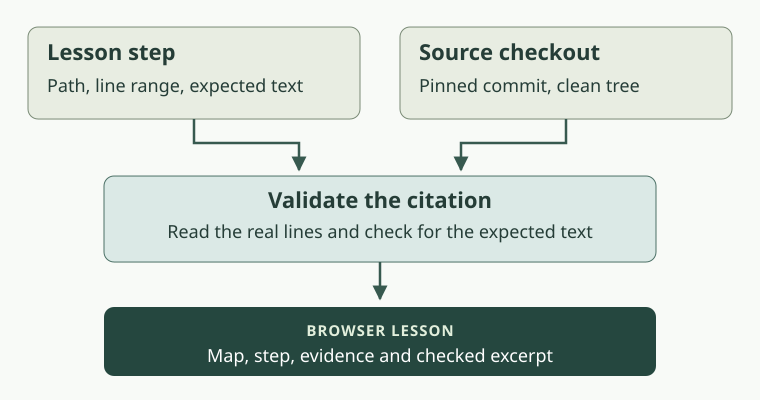

Learning Playground · Tool guide
Teachable Code
Point at a control, find the code that draws it, and predict what pressing it will do. Our Apple TV example follows a movie poster from its SwiftUI label to the action on the remote.
Follow a poster through SwiftUI
- Pick a visible element. Open the screen sketch in Browse. Select Poster and caption under Explore by element. The Swift excerpt shows the artwork and a conditional caption inside one button. Find the condition that controls whether the title text appears.
- Predict what the remote will do. Choose Move focus right. The white ring marks the newly focused title. Before choosing Press Select, predict which movie will open. Press Select and check that the title on the details screen matches the focused poster.
- Separate a label from an action. Return to Browse. Choose Hide captions, move focus and select a movie again. The button still works. In the guided map, inspect the grid step to find where each poster receives its action, then the poster step to find where its appearance is built.
- Switch to executed evidence. Open Search in the sketch and choose Inspect title matching. Compare the results for
in,INTERSTELLARanddune. The real matcher returned prefix, exact and no match against the same sample title.
How the lesson is organized
- Persistent map
- The overall system stays on screen while the active components change with each step. For a UI, a 2D map can connect a visible element to its input, transformation and output. The 3D option can represent data movement in a training or serving system.
- Code and questions
- A learner can select a step, inspect the source excerpt and folder tree, or use prediction prompts. Provenance labels identify what came from reading code, running it, or authoring an illustrative value.
- Other directions
- The skill also guides paper-to-code comparison, reproduction, proposed changes and transfer between projects. Those routes require different evidence. A successful source citation establishes what code was present, while a runtime claim needs a suitable run.
The upstream example about DeepTutor shows the 2D map for another application. Select a component and compare its highlighted stage with the source and explanation panels. Upstream English screenshot by ywEdAi · Upstream interactive example.

From a file reference to checked code

The agent supplies a JavaScript lesson definition, including a pinned commit, an expected substring for each cited range, stage objects and step descriptions. A Python builder evaluates the lesson with Node, reads the checkout, verifies its revision and cleanliness, and checks that the requested range actually contains the expected text. It inserts the real excerpt from disk.
The builder also checks map references, visible endpoints of flows, and inputs and outputs for each step. A valid citation can still point to a dormant screen. We traced Prism’s active Browse route from its root view to make sure the lesson described what appears at this revision. Lesson authoring contract.
Build the upstream public example
You can explore the saved Prism views without access to its checkout. To practice the full build with public inputs, use the upstream mini-SGLang lesson. In a fresh directory, use Git, Python 3 and Node.js to clone the lesson builder and its example subject at their exact revisions.
git clone https://github.com/ywEdAi/teachable-code.git
git -C teachable-code checkout --detach e74598d4b0d2a13cf67182ec897ad8f308894495
git clone https://github.com/sgl-project/mini-sglang.git
git -C mini-sglang checkout --detach 9a91cfafe754aa85daee49998176275667eb58f2
python3 teachable-code/scripts/build_lesson.py teachable-code/examples/lessons/mini-sglang \
--repo mini-sglang --standalone --out mini-sglang-lesson.htmlOpen mini-sglang-lesson.html in a browser with internet access for the 3D library. Expect a 14-step lesson showing how shared request prefixes change the work performed. The sample values come from the authors’ cache-rule replay. For a lesson about your own repository, give the agent a commit, one behavior to trace, and what the reader already understands. Worked lesson source.
How the Prism trial was checked
On November 24, 2026, Teachable Code’s classifier suggested “library”. We followed the Apple TV application entry point and selected a 2D app lesson. The playground authored the steps for a learner new to Swift and UI design. The upstream builder checked fourteen citations against Prism commit 960198d0 and generated the guided map. The playground’s screen sketch and simulated remote use those same excerpts.
The real title matcher ran on three inputs, and a separate search-ranking XCTest passed. Safari checks covered a poster, focus, title details, Library and the guided path to Settings. The Apple TV application, playback, iPad UI and phone-width browser verification were outside the completed checks. The trial did not exercise the reproduction and code-change workflows.
The learner named Teachable Code among their three favorites on November 24, 2026. Their preference between the screen sketch and guided map, and their reason, remain open. Trial record.